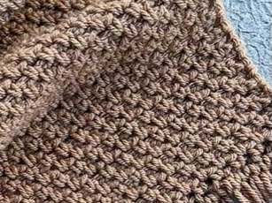
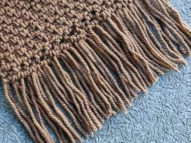

Crochet Scarf
Estimated Time: 1 - 2 Hours
Materials Needed
- 5mm Crochet Hook
- Medium Weight Yarn (Approx. 300–400g)
- Stitch Marker (Optional)
- Yarn Needle
- Scissors
- Measuring Tape
Abbreviations
- ch = Chain
- sc = Single Crochet
- hdc = Half Double Crochet
- dc = Double Crochet
- sl st = Slip Stitch
- FO = Fasten Off
Pattern Instructions (Crochet Scarf)

Step 1 (Foundation Chain)
Chain 31 stitches, or any width you would like your scarf to be.
Make sure your chain is not twisted before starting the first row.

Step 2 (First Row)
Starting in the second chain from the hook, crochet one single crochet (sc) into each chain.
Turn your work at the end of the row.
Step 3 (Build the Scarf)
Chain 1 and turn.
Crochet one single crochet into each stitch across every row.
Repeat until the scarf reaches approximately 150–180 cm in length.
Step 4 (Neaten the Edges)
Optional: Crochet one round of single crochet around the entire scarf.
This gives the scarf a cleaner and more polished finish.

Step 5 (Add Fringe)
Cut several strands of yarn approximately 20 cm long.
Fold each strand in half and attach them evenly along both ends of the scarf.
Trim the fringe so that all strands are the same length.
Step 6 (Finish Off)
Fasten off the yarn.
Use a yarn needle to weave in all loose ends securely.
Step 7 (Finished Scarf)
Your crochet scarf is now complete!
Wrap it around your neck to stay warm or gift it to someone special.